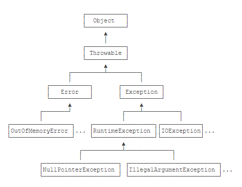

01.Java的异常
调用方获知调用失败的信息：

Throwable分为Error和Exception:
- Error表示严重的错误，程序自己解决不了
- Exception表示运行时的错误，它可以被捕获并处理
其中Exception又分为两大类：
-
- 非RuntimeException(包括IOException、ReflectiveOperationException等)
Java规定:
- 必须捕获的异常，包括Exception及其子类，但是不包括RuntimeException及其子类，这种类型的异常成为Checked Exception
- 不需要捕获的异常，包括Error及其子类，RuntimeException及其子类
捕获异常使用try-catch语句
- try{…} ← 可能发生异常的代码
- catch{…} ← 捕获对应的Exception及其子类
像UnsupportedEncodingException这样的非RuntimeException(Checked exception)，必须被捕获，如果不捕获编译器会报错,RuntimeException无需强制捕获
使用多catch语句的时候要注意子类必须写在前面，因为多catch语句只能匹配一次
try-catch-finally可以保证最后无论是否发生异常都会运行finally
在某些情况，可以没有catch，只使用try-finally
如果某些异常的处理逻辑相同，但是异常本身不存在继承关系，那就要编写多个catch子句，因为处理IOEception和NumberFormatException的代码是相同的，所以我们可以把它两用 | 合并到一起
Learn From: 廖雪峰java教程
异常(exception)
又称例外、差错、违例
对应着Java运行错误处理机制
Java中处理异常
- 抛出(trhrow)异常
- 运行时系统在调用栈中查找
- 从生成异常的方法开始进行回溯，知道找到：
捕获(catch)异常代码
1
2
3
4
5
6
7
8
9
| try{
语句组;
}catch(异常类名 异常形式参数名){
异常处理语句组;
}catch(异常类名 异常形式参数名){
异常处理语句组;
}finally{
异常处理语句组;
}
|
其中，catch语句可以0至多个，可以没有finally语句
异常的分类
Throwable
- Error: JVM的错误
- Exception: 异常
一般所说的异常是指Exception及其子类
多异常处理
子类异常要排在父类异常的前面
finally语句
- 无论是否有异常都要执行
- 即使其中有
break，return等语句
- 在编译时，finally部分代码生成了多遍
受检的异常
Exception分两种
- RuntimeException及其子类，可以不明确处理
- 否则，称为受检的异常(checked Exception)
受检的异常，要求明确进行语法处理
- 要么捕获(catch)
- 要么抛出(throws)：在方法的签名后面用throws xxxx来声明：
- 在子类中，如果要覆盖父类的一个方法，若父类中的方法声明了throws异常，则子类的方法也可以throws异常
- 可以抛出子类异常(更具体的异常)，单不能抛出更一般的异常
创建用户自定义异常类
创建用户自定义异常时：
- 继承自Exception类或某个子Exception类
- 定义属性和方法，或重载父类的方法
重抛异常及异常链接
对于异常，不仅要进行捕获处理，有时候还需要将此异常进一步传递给调用者，以便让调用者也能感受到这种异常。这时可以在catch语句块或者finally语句块中采取以下三种方式：
- 将当前捕获的异常再次抛出：
- 重新生成一个异常，并抛出：
throw new Exception("some message");
- 重新生成并抛出一个新异常，该一场中包含了当前异常的信息，如：
throw new Exception("some message", e);- 可用
e.getCause()来得到内部异常
断言(assertion)
格式是：
- assert 表达式;
- assert 表达式: message;
在调试程序时，如果表达式不为true，则程序会产生异常，并输出相关的错误信息。
程序的测试及JUnit
程序的修改是经常要进行的过程，必须保证程序在修改后其结果仍然是正确的。
在编写程序代码的同时，还编写测试代码来判断这些程序是否正确。
这个过程称为”测试驱动”的开发过程。
从而保证了代码的质量，减少了后期的查错与调试的时间，所以实际上它提高了程序的开发效率。
JUnit
在Java的测试过程，经常使用JUnit框架。
现在大多数Java集成开发工具都提供了对JUnit的支持。
测试函数
@Test来标注测试函数
在测试中常用的语句如下：
- fail(message);//表示程序出错
- assertEqauls(value1, value2);//表示程序要保证两个参数要相等
- asserNull(value);//表示参数要为null
1
2
3
4
5
6
| @Test
public void testSum2(){
HelloWorld a = new HelloWorld();
assertEquals(a.sum(0, 100),100);
}
|
程序中的错误
程序中的错误通常可以分为三大类：
- 语法错误(Syntax error)
- 运行错误(Runtime error)
- 逻辑错误(Logic error)
- 调试(debug)、单元测试(unit test)
程序的调试(debug)有三种手段：
- 断点(breakpoint)
- 跟踪(trace)
- 监视(watch)